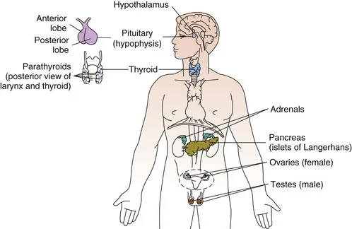

Expanded Nursing Uganda Explanation
Applied anatomy and physiology of the endocrine system should be understood beyond a short definition. Link the concept to patient history, focused assessment, common risks, nursing priorities, documentation and evaluation of outcomes.
01 Applied Anatomy and Physiology of the Endocrine System
The endocrine system controls the growth of many tissues, like the bone and muscle, and the degree of metabolism of various tissues, which aids in the maintenance of the normal body temperature and normal mental functions .
The endocrine system comprises glands and tissues that produce hormones for regulating and coordinating vital bodily functions, including growth and development, metabolism, sexual function and reproduction, sleep and mood.
Endocrine system is a system of ductless glands, which secrete hormones that are pored in the blood stream to be transported to the target cells. The endocrine system is composed of the following
- Pituitary gland
- Parathyroid gland
- Thyroid gland
- Adrenal gland
- Pancreas
- Tests and ovaries
Hormones secreted by these glands act on the specific target tissue away from their site of secretion. Some hormones are protein in nature while others are not.
They act by interacting with specific cell membrane receptors to stimulate the intra cellular Adenylyl cyclase system (membrane-bound enzyme that catalyzes the conversion of Adenosine triphosphate (ATP)- organic compound that provides energy to drive many processes in living cells, such as muscle contraction, nerve impulse to Cyclic adenosine monophosphate (cAMP) – messenger used for intracellular signal induction, which in turn forms ATP to stimulate protein synthesis.
Hormones regulate their own production through a feedback (negative feedback mechanism) system where the increase in concentration of the hormone suppresses its own production.
02 Structure and function of major endocrine glands: ****
The endocrine system consists of several major glands that secrete hormones into the bloodstream. These glands include the pituitary gland, thyroid gland, adrenal glands, and pancreas.
The endocrine system plays a big role in regulating numerous body functions by releasing hormones , which are chemical messengers, directly into the bloodstream. These hormones travel to target tissues, influencing various physiological activities.
Exocrine vs. Endocrine Glands
Exocrine glands differ from endocrine glands in that they use ducts to transport their secretions, whereas endocrine glands release hormones directly into the bloodstream.
The pituitary gland, often termed the “ master gland ,” is a small structure hanging from the base of the brain. It controls other endocrine glands through hormone production, which is regulated by the hypothalamus.
But, hypothalamus is what controls the pituitary gland, making it the master of the master gland
Pituitary Gland Structure and Function
The pituitary gland is divided into two parts: the anterior and posterior pituitary, each with distinct functions and hormone production.
- Posterior Pituitary : Produces oxytocin , which stimulates uterine contractions and milk ejection, and antidiuretic hormone (ADH) , which helps the kidneys retain water.
- Anterior Pituitary : Produces several hormones including thyroid-stimulating hormone (TSH) , growth hormone (GH) , adrenocorticotropin (ACTH) , follicle-stimulating hormone (FSH) , luteinizing hormone (LH) , and prolactin .
The pituitary gland secretes hormones like; ( Anterior lobe )
- Adrenocorticotrophic hormone (ACTH)
- Somatotrophic hormone (STH)/(GH)
- Thyroid stimulating hormone (TSH)
- Follicle stimulating hormone (FSH)
- Luteinizing hormone (LH)’
- Melanocyte stimulating hormone (MSH)
The P osterior lobe secretes
- Anti diuretic hormone (ADH),
- Vasopressin
- Oxytocin.
Secretion of the anterior lobe is under the control of Hypothalamus which secretes regulatory hormones.
Growth hormone stimulates muscular and skeletal growth either by regulating synthesis of somatomedins by the liver or by directly stimulating incorporation of amino acids into proteins. Hypoglycemia is a potent stimulant of growth hormone release; obesity blunts its release. Excess secretion of growth hormone after epiphyseal fusion produces acromegaly where as before epiphyseal fusion causes gigantism
Image showing hormones produced by the anterior lobe.
Located in the neck just below the larynx, the thyroid gland consists of two lobes connected by an isthmus. It produces thyroid hormones (T4 and T3) that regulate metabolism and calcitonin, which lowers blood calcium levels.
These small glands, usually four in number, are located near the thyroid and regulate calcium levels in the body through the secretion of parathyroid hormone .
The pancreas has both endocrine and exocrine functions, for digestion and blood sugar regulation. The endocrine function occurs in the Islets of Langerhans, which contain alpha, beta, and delta cells.
- Alpha Cells : Release glucagon to increase blood glucose levels.
- Beta Cells : Produce insulin, which lowers blood glucose by facilitating its uptake into cells.
- Delta Cells : Secrete somatostatin, which inhibits both glucagon and insulin.
Situated atop the kidneys, the adrenal glands consist of two parts with distinct functions:
- Adrenal Medulla : Secretes catecholamines (norepinephrine and epinephrine), which are involved in the sympathetic nervous system’s response to stress.
- Adrenal Cortex : Produces steroid hormones including glucocorticoids (which increase blood glucose), mineralocorticoids (which regulate sodium and potassium), and androgenic hormones.
The gonads are the reproductive glands with endocrine functions.
- Ovaries : Located in the female abdomen, they produce estrogen and progesterone under the control of FSH and LH from the anterior pituitary.
- Testes : Situated in the male scrotum, they produce sperm and testosterone, promoting male growth and secondary sexual characteristics.
03 Hormones Produced
The pituitary gland is divided into two parts: the anterior pituitary and the posterior pituitary, each producing different hormones with distinct functions.
- Thyroid-Stimulating Hormone (TSH) : Stimulates the thyroid gland to produce thyroid hormones (T3 and T4), which regulate metabolism, energy levels, and overall growth and development.
- Growth Hormone (GH): Promotes growth of body tissues, particularly bones and muscles, by increasing protein synthesis, fat metabolism, and cell division.
- Adrenocorticotropic Hormone (ACTH) : Stimulates the adrenal cortex to release cortisol, a hormone that helps the body respond to stress, maintain blood sugar levels, and regulate metabolism.
- Follicle-Stimulating Hormone (FSH) : In females, it stimulates the growth and maturation of ovarian follicles; in males, it promotes sperm production in the testes.
- Luteinizing Hormone (LH) : In females, it triggers ovulation and the production of progesterone; in males, it stimulates the production of testosterone in the testes.
- Prolactin : Promotes milk production in the mammary glands after childbirth.
- Oxytocin : Stimulates uterine contractions during childbirth and promotes the ejection of milk during breastfeeding.
- Antidiuretic Hormone (ADH) : Helps the kidneys manage the amount of water in the body by increasing water reabsorption, reducing urine volume, and helping maintain blood pressure.
04 Nursing Uganda Clinical Lens
Use The Endocrine system as a practical nursing topic, not only a memorized definition. Start with normal structure and function, then connect it to assessment findings and disease.
- What to understand first: define the endocrine system, identify the normal or expected pattern, then explain what changes when the patient is unwell.
- Why it matters in care: the nurse must recognize risk early, explain findings clearly, document accurately and know when to escalate.
- How to revise it: connect each point to assessment, nursing diagnosis or care problem, intervention, rationale and evaluation.
05 Assessment Guide
- Relevant inspection, palpation, movement, auscultation, vital signs or neurological checks.
- Normal findings, abnormal findings and what each abnormality may indicate.
- Patient history, risk factors and how the body system affects other systems.
06 Nursing Priorities, Rationales and Outcomes
- Use anatomy to explain symptoms and guide focused assessment.
- Recognize findings that need urgent escalation.
- Teach the patient using simple body-system language.
The rationale for these priorities is patient safety: nursing actions should prevent deterioration, reduce discomfort, support recovery and create clear evidence for the next caregiver.
- Expected outcome: The learner can explain normal function, identify abnormal signs and connect them to nursing action.
07 Patient Teaching and Revision Check
- Explain the endocrine system in simple language the patient or caregiver can repeat back.
- Teach warning signs, medicine or follow-up instructions, hygiene or lifestyle points where relevant.
- For exams, prepare a short answer using: definition, causes or risk factors, signs, assessment, management, complications and prevention.
- For ward practice, document baseline findings, actions taken, patient response and the plan for review.
Illustrations and Diagrams (1)

Related Video Lectures
Watch nursing lecture videos on YouTube for this topic. Opens in a new tab.
Watch on YouTubeExternal link: YouTube may use its own cookies and terms. Nursing Uganda is not affiliated with YouTube.